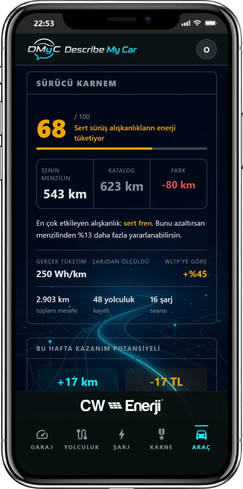
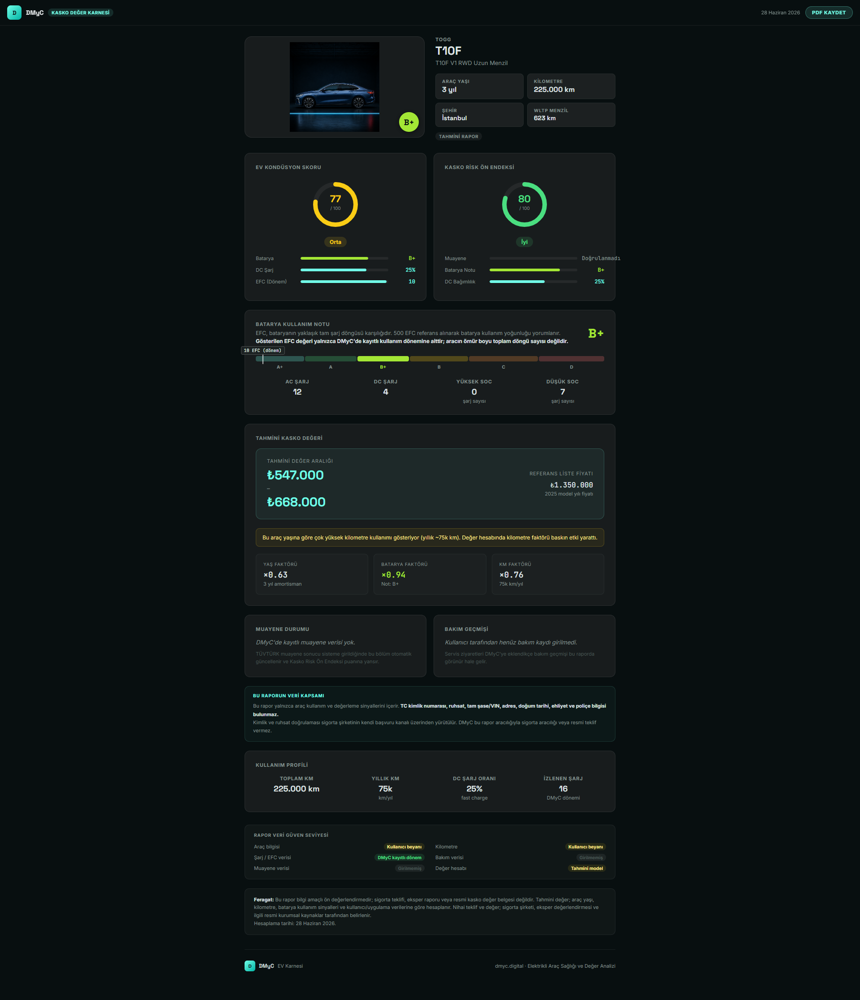

Aracının ne durumda
olduğunu artık bileceksin.
Şarj ettikçe, sürdükçe DMyC aracını tanır. Bataryan ne kadar sağlıklı, yılda ne kadar enerji harcıyorsun, aracın gerçekte ne değer — hepsini sana gösterir.
Elektrikli araç sahipleri hep aynı şeyleri sorar.
Ve çoğunun cevabı yoktur.
"Bataryam ne kadar sağlıklı?"
Hızlı şarj ne kadar kullandın, bataryan eskiyor mu — bunu sana söyleyen bir uygulama yoktu. Şimdiye kadar.
"Gerçekte kaç km yapabilirim?"
Üreticinin söylediği menzil seninki değil. Senin güzergahın, senin sürüş biçimin ve senin havan — hepsi farklı bir sayı verir.
"Sigortacıya ne göstereyim?"
Kasko için WhatsApp'tan fotoğraf atmak zorunda kalmak saçma. Aracının teknik geçmişini gösteren düzgün bir belge olmalı.
Nasıl çalışır?
Karmaşık bir şey yok. Sürdükçe öğrenir.
Aracını ekle
Marka ve modeli seç, teknik bilgiler otomatik gelir. 2 dakika.
Sür ve şarj et
Arka planda çalışır, bir şey yapman gerekmez. Şarj yaptıkça, yolculuk yaptıkça DMyC aracını tanımaya başlar.
Karnenle birşeyler yap
Batarya notunu gör, sigorta raporu oluştur, aracını satarken alıcıya gönder. Hepsi bir link.
İki tür rapor, iki farklı ihtiyaç.
İkisi de tarayıcıda açılır, PDF olarak kaydedilir.
Aracının sağlık raporu
Bataryan ne notta? Gerçek menzil ne kadar? Şarj alışkanlıkların iyi mi kötü mü? Bunların hepsini tek sayfada, net bir dille gösterir. Aracını satarken ya da değer biçerken işine yarar.

Örnek EV Karnesi arrow_forwardSigortacıya gönderebileceğin belge
4 fotoğraf çek, rapor hazır. Aracının muayene geçmişi, batarya durumu ve tahmini değer aralığı — hepsi tek belgede. WhatsApp yerine profesyonel bir dosya gönderirsin.

Örnek Kasko Karnesi arrow_forwardBatarya notu nedir?
Tıpkı okul karnesi gibi. DMyC şarj alışkanlıklarına bakarak aracına A+'dan D'ye kadar bir not verir. Bu not hem sana bir şey söyler hem de ikinci el alıcılarına ya da sigortacıya güven verir.
Not; hızlı şarj oranın, şarj döngüsü sayın ve şarj alışkanlıklarına göre belirlenir.
Senden ne istemiyoruz?
Çoğu uygulama her şeyini ister. Biz istemiyoruz.
-
check_circle
TC kimlik numarası — yok.
Kimlik bilgin sisteme girmez.
-
check_circle
Tam şase numarası — yok.
Son 5 hane yeterli.
-
check_circle
Ruhsat veya poliçe — yok.
Belge yüklemen gerekmiyor.
-
check_circle
Fotoğraflarından konum — siliyoruz.
Yüklediğin araç fotoğraflarındaki GPS bilgisi otomatik silinir.
Aracını tanımaya
bugün başla.
Ücretsiz. Play Store gerekmez. Android telefona direkt yüklenir.
android Uygulamayı İndirAPK dosyası · Android 10 ve üzeri